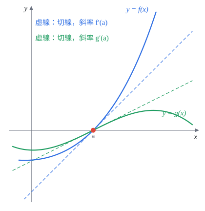
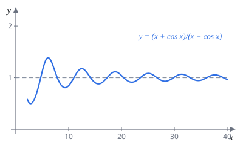
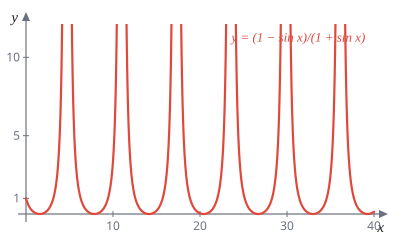

Week 8 羅必達法則
AP Calculus I（115 學年）Lecture Note 8 教學與題解
這週只有一個主題：用導數算 $\frac00$、$\frac\infty\infty$ 型的極限。週六已經先介紹過這條法則，這週把它用到所有不定型上：$\infty-\infty$、$0\cdot\infty$ 先化成分式，$0^0$、$\infty^0$、$1^\infty$ 先取對數。最後一節看兩個常見的誤用。
8.0 羅必達法則（*）延伸
8.0.1 基本不定型：$\frac00$ 與 $\frac\infty\infty$
定理 8.0.1（羅必達法則）$f,g$ 可微，且
- $\displaystyle\lim_{x\to a}f(x)=\lim_{x\to a}g(x)=0$（或都是 $\pm\infty$）；
- $a$ 附近 $g'(x)\neq0$；
- $\displaystyle\lim_{x\to a}\frac{f'(x)}{g'(x)}=L$。
則 $\displaystyle\lim_{x\to a}\frac{f(x)}{g(x)}=\lim_{x\to a}\frac{f'(x)}{g'(x)}=L$。$a$ 與 $L$ 可以是 $\pm\infty$，單邊極限 $x\to a^\pm$ 也成立。
為什麼會對？$f(a)=g(a)=0$ 時，把兩條曲線在 $a$ 附近放大，都會像直線（線性近似）：$f(x)\approx f'(a)(x-a)$、$g(x)\approx g'(a)(x-a)$。相除，$(x-a)$ 約掉，剩下斜率的比 $\frac{f'(a)}{g'(a)}$。兩個都趨近 $0$ 的量，比的是誰衰減得快，而衰減速度就是導數。

用的時候在等號上寫 $\overset{L}{=}$。三件事要記住：
- 是分子分母各自微分，不是對整個分式用商法則。
- 每用一次之前都要確認還是 $\frac00$ 或 $\frac\infty\infty$，不是就停（題 6 的錯誤）。
- $\frac{f'}{g'}$ 的極限不存在時，法則什麼都沒說，不能推出原極限不存在（題 7 的錯誤）。
題 1求
(a) $\displaystyle\lim_{x\to0}\frac{e^x-x-1}{\cos x-1}$ (b) $\displaystyle\lim_{x\to\infty}\frac{\sqrt[3]{1+x}-1}{x}$
(a) 代 $x=0$：分子 $1-0-1=0$，分母 $1-1=0$，$\frac00$ 型。微分一次：
$$\lim_{x\to0}\frac{e^x-x-1}{\cos x-1}\overset{L}{=}\lim_{x\to0}\frac{e^x-1}{-\sin x}$$再代 $x=0$ 還是 $\frac00$，再用一次：
$$\overset{L}{=}\lim_{x\to0}\frac{e^x}{-\cos x}=\frac{1}{-1}=-1$$$-1$
(b) $x\to\infty$ 時分子分母都 $\to\infty$，$\frac\infty\infty$ 型：
$$\lim_{x\to\infty}\frac{(1+x)^{1/3}-1}{x}\overset{L}{=}\lim_{x\to\infty}\frac{\frac13(1+x)^{-2/3}}{1}=\lim_{x\to\infty}\frac{1}{3(1+x)^{2/3}}=0$$$0$
不用羅必達：分子大約是 $x^{1/3}$，分母是 $x$，分母長得快很多，極限是 $0$。寫嚴謹一點就是分子分母同除 $x$：$\frac{\sqrt[3]{1/x^3+1/x^2}-1/x}{1}\to0$。
8.0.2 變形：$\infty-\infty$ 與 $0\cdot\infty$
這兩種不是分式，不能直接套。先改寫成分式：
- $\infty-\infty$：通分。
- $0\cdot\infty$：把其中一個移到分母，$fg=\dfrac{f}{1/g}$ 或 $\dfrac{g}{1/f}$。挑微分後比較好算的那個，通常 $\ln$ 留在分子。
題 2求
(a) $\displaystyle\lim_{x\to0^+}\left(\frac{\sin x}{x^2}-\frac1x\right)$ (b) $\displaystyle\lim_{x\to0^+}x\ln x$
(a) $\frac{\sin x}{x^2}=\frac{\sin x}{x}\cdot\frac1x$，大約是 $\frac1x$，所以這是 $\infty-\infty$ 型。通分：
$$\frac{\sin x}{x^2}-\frac1x=\frac{\sin x-x}{x^2}\quad(\tfrac00\text{ 型})$$ $$\lim_{x\to0^+}\frac{\sin x-x}{x^2}\overset{L}{=}\lim_{x\to0^+}\frac{\cos x-1}{2x}\overset{L}{=}\lim_{x\to0^+}\frac{-\sin x}{2}=0$$第二步代 $0$ 是 $\frac{0}{0}$，所以可以再用一次。其實到 $\frac{\cos x-1}{2x}$ 時也能直接寫成 $\frac{\cos x-1}{x^2}\cdot\frac{x}{2}\to-\frac12\cdot0=0$。
$0$
(b) $x\to0^+$，$\ln x\to-\infty$，$0\cdot(-\infty)$ 型。把 $x$ 移到分母：
$$\lim_{x\to0^+}\frac{\ln x}{1/x}\overset{L}{=}\lim_{x\to0^+}\frac{1/x}{-1/x^2}=\lim_{x\to0^+}(-x)=0$$如果反過來把 $\ln x$ 移到分母，寫成 $\frac{x}{1/\ln x}$，微分後是 $\frac{1}{-1/(x\ln^2x)}=-x\ln^2x$，比原來更糟。這就是「$\ln$ 留在分子」的原因。
$0$
這題和週六題 25(a) 一樣，結論要記：$x\to0^+$ 時 $x$ 打贏 $\ln x$。
8.0.3 不定型的次方：$0^0$、$\infty^0$、$1^\infty$
底數和指數都在變的時候，先寫成 $e$ 的次方：
$$f(x)^{g(x)}=e^{g(x)\ln f(x)}$$指數 $g\ln f$ 在這三種情況都是 $0\cdot\infty$ 型（例如 $1^\infty$：$\ln1=0$ 乘 $\infty$），照 8.0.2 化成分式算出極限 $M$，答案就是 $e^M$。$e^t$ 連續，所以極限可以搬進指數。
解題套路$\lim f^g$：(1) 算 $M=\lim g\ln f$（化成 $\frac{\ln f}{1/g}$ 用羅必達）；(2) 答案 $e^M$。最常忘的是最後一步沒把 $e$ 加回去。
題 3求
(a) $\displaystyle\lim_{x\to0^+}x^x$ (b) $\displaystyle\lim_{x\to\infty}\left(2^x+3^x+5^x\right)^{1/x}$ (c) $\displaystyle\lim_{x\to0}(\cos x)^{1/x^2}$
(a) $0^0$ 型。$x^x=e^{x\ln x}$，由題 2(b)，$x\ln x\to0$：
$$\lim_{x\to0^+}x^x=e^{0}=1$$$1$
(b) 底數 $\to\infty$，指數 $\frac1x\to0$，$\infty^0$ 型。取對數：
$$\ln\left(2^x+3^x+5^x\right)^{1/x}=\frac{\ln(2^x+3^x+5^x)}{x}\quad(\tfrac\infty\infty\text{ 型})$$ $$\overset{L}{=}\frac{2^x\ln2+3^x\ln3+5^x\ln5}{2^x+3^x+5^x}=\frac{\left(\frac25\right)^x\ln2+\left(\frac35\right)^x\ln3+\ln5}{\left(\frac25\right)^x+\left(\frac35\right)^x+1}\;\longrightarrow\;\frac{\ln5}{1}$$第二個等號是分子分母同除 $5^x$；$\left(\frac25\right)^x$、$\left(\frac35\right)^x\to0$。所以原式 $=e^{\ln5}=5$。
$5$
不用羅必達的夾擠：$5^x\le2^x+3^x+5^x\le3\cdot5^x$，開 $\frac1x$ 次方得 $5\le(\cdots)^{1/x}\le3^{1/x}\cdot5$，右邊 $\to1\cdot5$。直覺上，幾個指數相加時最大的底數說了算。
(c) $\cos x\to1$，$\frac1{x^2}\to\infty$，$1^\infty$ 型。取對數：
$$\frac{\ln(\cos x)}{x^2}\overset{L}{=}\frac{\frac{-\sin x}{\cos x}}{2x}=-\frac{1}{2\cos x}\cdot\frac{\sin x}{x}\;\longrightarrow\;-\frac12$$所以原式 $=e^{-1/2}$。
$e^{-1/2}=\dfrac{1}{\sqrt e}$
題 4用羅必達法則求
(a) $\displaystyle\lim_{x\to0}\frac{\tan^{-1}(x^2)}{1-\cos(3x)}$
(b) $\displaystyle\lim_{x\to0}(\cos x)^{\csc(x^2)}$。提示：$(\cos x)^{\csc(x^2)}=e^{\csc(x^2)\ln(\cos x)}$，先算 $\displaystyle\lim_{x\to0}\frac{\ln(\cos x)}{\sin(x^2)}$。
(c) $\displaystyle\lim_{x\to+\infty}x^3\left(\frac1x-\sin\frac1x\right)$。提示：$x^3\left(\frac1x-\sin\frac1x\right)=\dfrac{\frac1x-\sin\frac1x}{x^{-3}}$。
(a) 分子分母都 $\to0$。$(\tan^{-1}u)'=\frac{1}{1+u^2}$，連鎖律得分子導數 $\frac{2x}{1+x^4}$：
$$\overset{L}{=}\lim_{x\to0}\frac{\frac{2x}{1+x^4}}{3\sin3x}=\lim_{x\to0}\frac{2}{9(1+x^4)}\cdot\frac{3x}{\sin3x}=\frac29\cdot1$$中間把 $\frac{2x}{3\sin3x}$ 湊成 $\frac29\cdot\frac{3x}{\sin3x}$，避免再微分一次。
$\dfrac29$
(b) $1^\infty$ 型。照提示算指數，$\frac00$ 型：
$$\lim_{x\to0}\frac{\ln(\cos x)}{\sin(x^2)}\overset{L}{=}\lim_{x\to0}\frac{-\tan x}{2x\cos(x^2)}=\lim_{x\to0}\left(-\frac{\tan x}{x}\cdot\frac{1}{2\cos(x^2)}\right)=-1\cdot\frac12$$所以原式 $=e^{-1/2}$。和題 3(c) 答案相同並非巧合：$x\to0$ 時 $\sin(x^2)$ 和 $x^2$ 幾乎一樣。
$e^{-1/2}=\dfrac1{\sqrt e}$
(c) $\infty\cdot0$ 型，照提示寫成 $\frac00$。分子 $\left(\frac1x-\sin\frac1x\right)'=-\frac1{x^2}+\frac{1}{x^2}\cos\frac1x=\frac{\cos\frac1x-1}{x^2}$，分母 $(x^{-3})'=-3x^{-4}$：
$$\overset{L}{=}\lim_{x\to\infty}\frac{\left(\cos\frac1x-1\right)/x^2}{-3/x^4}=\lim_{x\to\infty}\frac{1-\cos\frac1x}{3x^{-2}}$$還是 $\frac00$。分子 $\left(1-\cos\frac1x\right)'=-\frac1{x^2}\sin\frac1x$，分母 $(3x^{-2})'=-6x^{-3}$：
$$\overset{L}{=}\lim_{x\to\infty}\frac{\frac{1}{x^2}\sin\frac1x}{6x^{-3}}=\lim_{x\to\infty}\frac{x\sin\frac1x}{6}=\lim_{x\to\infty}\frac16\cdot\frac{\sin\frac1x}{\frac1x}=\frac16$$$\dfrac16$
解題套路$x\to\infty$ 又看到 $\frac1x$ 時，先換元 $y=\frac1x\to0^+$，(c) 就變成 $\displaystyle\lim_{y\to0^+}\frac{y-\sin y}{y^3}\overset{L}{=}\frac{1-\cos y}{3y^2}\to\frac12\cdot\frac13=\frac16$，連鎖律全部省掉。
這三小題就是 109-1 期中考第 5 題，見考古題詳解，(a)(b) 那裡另附不用羅必達的做法。
題 5常數 $a,b$ 滿足 $\displaystyle\lim_{x\to0}\left(\frac{\sin(2x)}{x^3}+\frac{a}{x^2}+b\right)=0$，求 $a+b$。（講義答案 $-\frac23$）
把 $b$ 移開，條件就是
$$\lim_{x\to0}\frac{\sin(2x)+ax}{x^3}=-b.$$先定 $a$。改寫 $\dfrac{\sin2x+ax}{x^3}=\dfrac{1}{x^2}\left(2\cdot\dfrac{\sin2x}{2x}+a\right)$。括號 $\to2+a$，前面的 $\frac1{x^2}\to\infty$。如果 $2+a\neq0$，整個式子會爆到 $\pm\infty$，不可能等於有限的 $-b$。所以 $a=-2$。
再求 $b$。$a=-2$ 時是 $\frac00$ 型：
$$\lim_{x\to0}\frac{\sin2x-2x}{x^3}\overset{L}{=}\lim_{x\to0}\frac{2\cos2x-2}{3x^2}\overset{L}{=}\lim_{x\to0}\frac{-4\sin2x}{6x}=-\frac46\cdot2=-\frac43$$每一步代 $x=0$ 都還是 $\frac00$，可以繼續用。於是 $-b=-\frac43$，$b=\frac43$，$a+b=-2+\frac43$。
$a+b=-\dfrac23$（與講義答案相同）
也可以先用一次羅必達得 $\frac{2\cos2x+a}{3x^2}$，再說「分母 $\to0$，分子必須 $\to0$」得 $a=-2$。但這個推論要小心：羅必達只保證「$\frac{f'}{g'}$ 有極限 $\Rightarrow$ $\frac fg$ 有極限」，反方向不一定成立。上面先定 $a$ 的寫法不靠羅必達，比較穩。
8.0.4 羅必達的誤用
題 6學生 A 的作業：
$$\lim_{x\to0}\frac{\sec x-1}{e^{2x}-1}=\lim_{x\to0}\frac{\sec x\tan x}{2e^{2x}}=\lim_{x\to0}\frac{\sec x\tan^2x+\sec^3x}{4e^{2x}}=\frac14.$$指出哪裡錯了。
第一步沒問題：$x=0$ 時 $\sec0-1=0$、$e^0-1=0$，是 $\frac00$ 型。
錯在第二步。$\dfrac{\sec x\tan x}{2e^{2x}}$ 在 $x=0$ 是 $\dfrac{1\cdot0}{2}=0$，已經不是不定型，直接代值就結束了，不能再微分。學生 A 的導數本身都算對（$(\sec x\tan x)'=\sec x\tan^2x+\sec^3x$），錯的是在不該用的地方用了法則。
$$\lim_{x\to0}\frac{\sec x-1}{e^{2x}-1}\overset{L}{=}\lim_{x\to0}\frac{\sec x\tan x}{2e^{2x}}=\frac{0}{2}=0$$正確答案是 $0$；錯在第二次使用時已不是 $\frac00$ 型
題 7學生 B 的作業：
$$\lim_{x\to\infty}\frac{x+\cos x}{x-\cos x}=\lim_{x\to\infty}\frac{1-\sin x}{1+\sin x}\ \text{不存在，所以}\ \lim_{x\to\infty}\frac{x+\cos x}{x-\cos x}\ \text{也不存在。}$$指出哪裡錯了。
原式確實是 $\frac\infty\infty$ 型，但羅必達法則是「如果 $\frac{f'}{g'}$ 的極限存在，那麼 $\frac fg$ 的極限也是它」。$\frac{f'}{g'}$ 的極限不存在時，條件 3 不成立，法則不給任何結論，原極限可能存在也可能不存在。另外 $g'(x)=1+\sin x$ 在 $x=\frac{3\pi}2+2k\pi$ 等於 $0$，而且這些點要多大有多大，條件 2 也不成立。
直接算：分子分母同除 $x$，$\left|\frac{\cos x}{x}\right|\le\frac1x\to0$（夾擠）：
$$\lim_{x\to\infty}\frac{x+\cos x}{x-\cos x}=\lim_{x\to\infty}\frac{1+\frac{\cos x}{x}}{1-\frac{\cos x}{x}}=\frac{1+0}{1-0}=1$$

原極限是 $1$；$\frac{f'}{g'}$ 沒有極限時不能推出 $\frac fg$ 沒有極限
本週必背總整理
- 羅必達：$\frac00$ 或 $\frac\infty\infty$ 型，$\lim\frac fg=\lim\frac{f'}{g'}$；分子分母各自微分；考試不能用，拿來對答案
- 每用一次先檢查還是不是不定型，不是就直接代值（題 6）
- $\frac{f'}{g'}$ 沒有極限時法則失效，不代表原極限不存在，要改用別的方法（題 7）
- $\infty-\infty$ 通分；$0\cdot\infty$ 寫成 $\frac{f}{1/g}$，$\ln$ 留分子
- $0^0$、$\infty^0$、$1^\infty$：$f^g=e^{g\ln f}$，算出指數極限 $M$，答案 $e^M$
- 常用結果：$x\ln x\to0$、$x^x\to1$（$x\to0^+$）；$(\cos x)^{1/x^2}\to e^{-1/2}$；$\frac{x-\sin x}{x^3}\to\frac16$
- $x\to\infty$ 遇到 $\frac1x$，先換 $y=\frac1x$